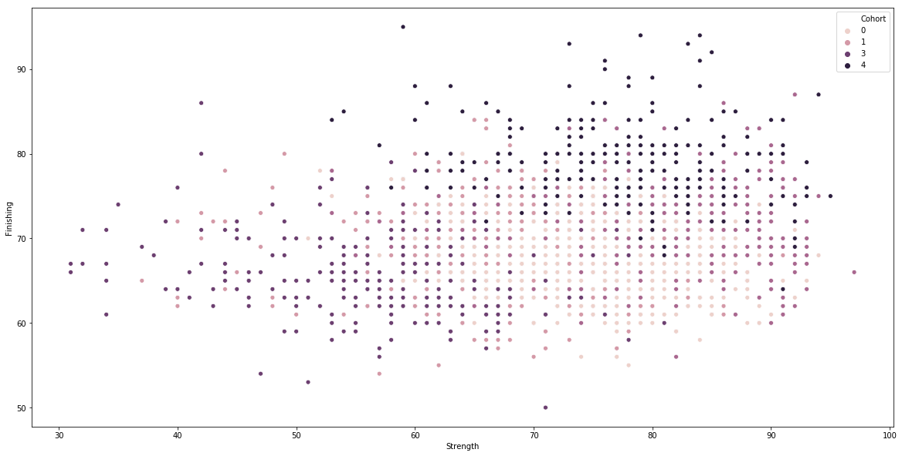
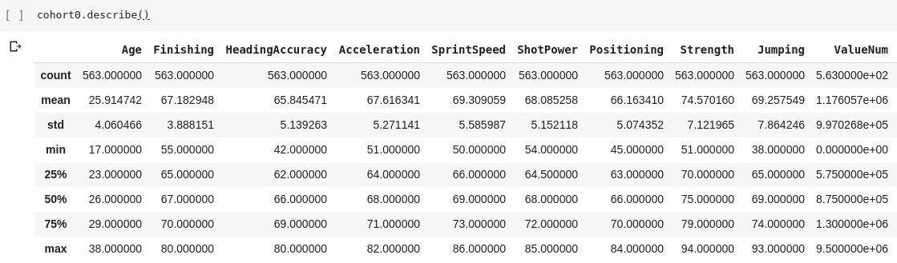
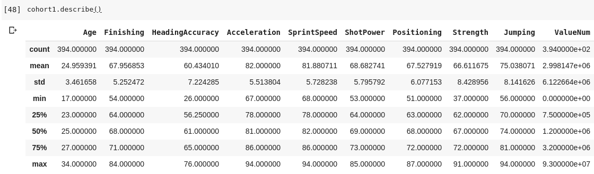
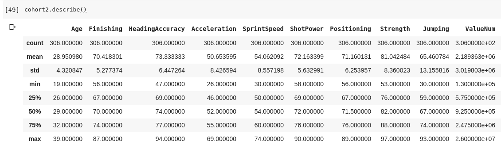
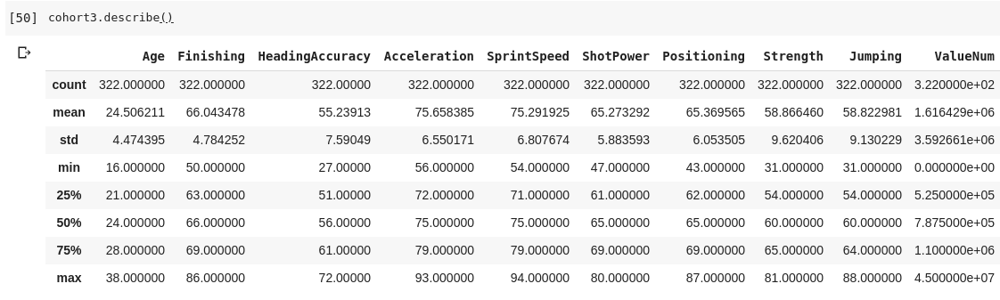
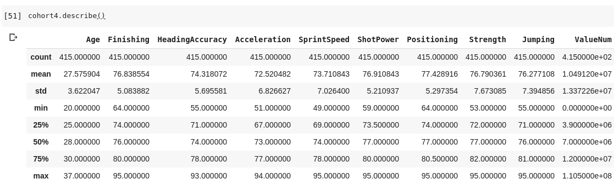

In this blog post, we are going to analyse the complete dataset from the FIFA 19 videogame, containing all the players currently playing professional football at all levels, including some fake players created by EA for future simulations. The dataset was made available by Sofifa.
We can divide the whole post into 2 segments, namely:
Feature Engineering and Analysis
Clustering
Link for part 1.
Now that we have feature engineered our dataset, we can look forward to the task of finding value for money players. As an example, we can start by analysing forwards in the game, and later we can extend similar code style to vary the parameters for our needs. Now as per the data, the following playing positions contribute to the collective location of playing as a forward.
LS, ST, RS, LF, CF, RF
Using this we can sample our dataset with the following determined features-
'Name', 'Age', 'Club', 'Finishing', 'HeadingAccuracy', 'Acceleration', 'SprintSpeed', 'ShotPower', 'Positioning', 'Strength', 'Jumping', 'ValueNum'
The code for the same is-
forwards = ['LS', 'ST', 'RS', 'LF', 'CF', 'RF']
sample = data[data['Position'].isin(forwards)]
sample = sample[['Name', 'Age', 'Club', 'Finishing', 'HeadingAccuracy', 'Acceleration', 'SprintSpeed', 'ShotPower', 'Positioning', 'Strength', 'Jumping', 'ValueNum']]
sample.head()Now, out of all these 18000+ players, in high-level competitive football, we can choose to count only the top 2000 players for a healthy estimation. This is not just to seed good players worldwide, but also to eliminate the chances of fake players created by FIFA for simulations in the career mode. After we have done that, we can use KMeans Clustering to cluster players into 5 different cohorts, based on the parameters specified, except Name, Value, Club and Age.
from sklearn.cluster import KMeans
flag = sample.drop(['Name', 'ValueNum', 'Club', 'Age'], axis=1)
flag = np.matrix(flag.values)
kmeans = KMeans(n_clusters=5).fit(flag)
sample['Cohort'] = kmeans.labels_As a visualization, we can plot a scatter plot of the Strength vs Finishing of the generated cohort-

This shows that the players are distributed on all parameters. We can now split the sample into independent datasets based on the cohorts-
cohort0 = sample[sample['Cohort'] == 0]
cohort1 = sample[sample['Cohort'] == 1]
cohort2 = sample[sample['Cohort'] == 2]
cohort3 = sample[sample['Cohort'] == 3]
cohort4 = sample[sample['Cohort'] == 4]We can now see the descriptions of each sub-dataset as follows-
    
Now based on the descriptions, the 4th cohort seems to be the one with the better ratings as compared to the other cohorts. As a matter of fact, the top 5 players in the 4th cohort sorted in the order of their overall ratings are Messi, Ronaldo, Suarez, Lewandowski and Dybala, which are top class.
We can use this cohort to identify players of a similar calibre overall, which are cheap and value for money. For my analysis, I would be focusing on forwards belonging to the range of 10 to 20 Million Euros. The 4th cohort can be sorted on the basis of the value and young players can be identified hence.
When this process is done, following players in the range of 18-25 come up in the range between 10 to 15 million euros.
Name | Club | Value in 2018 | Value Now
Tammy Abraham - Aston Villa - 10 M - 20 M
De Tomas - Rayo Vallecano - 11 M - 20 M
Borja Iglesias - RCD Espanyol - 12 M - 28 M
M. Dembele - Lyon - 12 M - 27 M
A. Mitrovic - Fulham - 12 M - 25 M
Munir - Barcelona - 12.5 M - 10 M
D. Selke - Hertha BSC - 12.5 M - 18 M
B. Embolo - Schalke - 12.5 M - 14 M
W. Weghorst - Wolfsburg - 13 M - 20 M
Wesley - Club Brugge KV - 13.5 M - 20 M
P. Schick - Roma - 14 M - 15 M
G. Simeone - Fiorentina - 15 M - 20 M
K Toko-Ekambi - Villarreal - 15 M - 17.5 MThis is just the tip of what we can analyse from the cohorts. As a matter of fact, this is just for the case of forwards, with certain predefined parameters. We could tweak all the factors to our preference. In this case alone we saw a profit of 89.5 million euros, with a decrease in net worth only in 1 out of 13 evaluated players.
Thanks for reading!